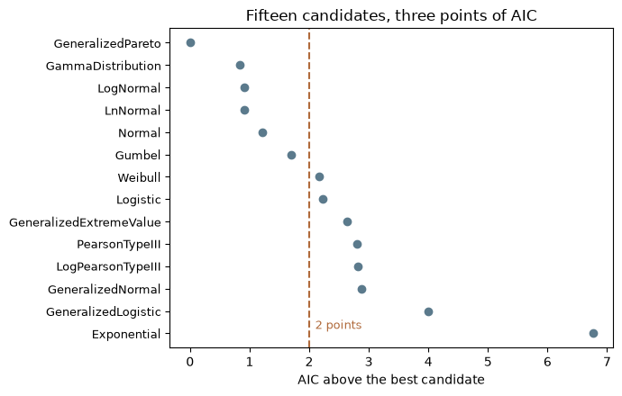
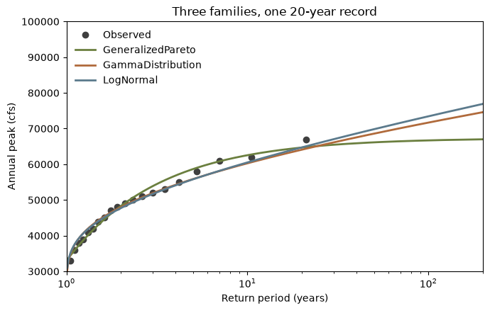

import matplotlib.pyplot as plt
import numpy as np
import pandas as pd
import corehydropy as ch16. Ranking fifteen candidate families
Distribution.fit() answers “what are the parameters of this family”. fit_distributions() answers the question that comes before it: which family. It fits every candidate in the RMC.BestFit DistributionList to the same sample by maximum likelihood and reports AIC, BIC and RMSE for each, leaving the ranking to you. There are fifteen candidates, and this page is about reading their table honestly on a record short enough that the ranking is not settled.
Example 02 uses fit_distributions() in passing, at the end of a page about estimation methods. This one is about the verb itself. It has no upstream counterpart: the USACE-RMC Numerics-Python-Examples repository has no distribution-selection notebook.
What you’ll learn
- What the fifteen candidates are, and which of them can fail on a given sample.
- Why AIC, BIC and RMSE can each name a different winner, and what to do about that.
- How to read the
convergedcolumn, which is not a warning to ignore. - How to get the parameters of the family you picked, which the ranking does not carry.
Setup
The record
Twenty annual peak discharges, the same series the package’s own oracle fixture uses, so the numbers below are pinned against the real C# FittingAnalysis at the bottom of this page.
peaks = [45000, 38000, 52000, 61000, 33000, 49000, 55000, 42000, 67000, 39000,
48000, 51000, 36000, 58000, 44000, 53000, 47000, 62000, 41000, 50000]
print(f"n = {len(peaks)}, mean = {np.mean(peaks):.0f} cfs, "
f"range = {min(peaks):.0f} to {max(peaks):.0f} cfs")n = 20, mean = 48550 cfs, range = 33000 to 67000 cfsTwenty years is a short record, and the point of this page is that the ranking says so.
The ranking
One call. The result is a dict of five parallel lists, one entry per candidate, which pd.DataFrame turns into a table.
ranking = pd.DataFrame(ch.fit_distributions(peaks))
ranking["dAIC"] = ranking["aic"] - ranking["aic"].min()
ranking.sort_values("aic")[["distribution", "aic", "dAIC", "bic", "rmse", "converged"]] \
.reset_index(drop=True)| distribution | aic | dAIC | bic | rmse | converged | |
|---|---|---|---|---|---|---|
| 0 | GeneralizedPareto | 423.311917 | 0.000000 | 426.299114 | 1278.642551 | True |
| 1 | GammaDistribution | 424.152932 | 0.841015 | 426.144397 | 1335.938994 | True |
| 2 | LogNormal | 424.227842 | 0.915925 | 426.219306 | 1302.785782 | True |
| 3 | LnNormal | 424.227842 | 0.915925 | 426.219307 | 1302.403434 | True |
| 4 | Normal | 424.519270 | 1.207353 | 426.510734 | 1436.096862 | True |
| 5 | Gumbel | 425.013211 | 1.701294 | 427.004676 | 1205.713399 | True |
| 6 | Weibull | 425.482306 | 2.170389 | 427.473770 | 1464.274929 | True |
| 7 | Logistic | 425.540285 | 2.228368 | 427.531749 | 1442.125566 | True |
| 8 | GeneralizedExtremeValue | 425.940702 | 2.628785 | 428.927899 | 1388.563194 | True |
| 9 | PearsonTypeIII | 426.120582 | 2.808665 | 429.107779 | 1303.292411 | True |
| 10 | LogPearsonTypeIII | 426.123297 | 2.811380 | 429.110494 | 1336.343000 | True |
| 11 | GeneralizedNormal | 426.195027 | 2.883110 | 429.182223 | 1328.005759 | True |
| 12 | GeneralizedLogistic | 427.303160 | 3.991243 | 430.290356 | 1257.295370 | True |
| 13 | Exponential | 430.072639 | 6.760722 | 432.064103 | 4714.463970 | True |
| 14 | KappaFour | NaN | NaN | NaN | NaN | False |
Fifteen rows, one per candidate. converged is False for KappaFour, whose four-parameter fit did not converge on this sample; its metrics are NaN and it cannot be ranked. A failed candidate is not a defect in the sample or in the fit. It is the honest report that this family had nothing to say about this record, and its row is kept rather than dropped so that a candidate cannot disappear from the list without being noticed.
Three criteria, three winners
Sorting the same table by each of the three metrics gives three different leaders.
def leader(metric):
ok = ranking.dropna(subset=[metric])
return ok["distribution"][ok[metric].idxmin()]
print(f"lowest AIC: {leader('aic')}")
print(f"lowest BIC: {leader('bic')}")
print(f"lowest RMSE: {leader('rmse')}")lowest AIC: GeneralizedPareto
lowest BIC: GammaDistribution
lowest RMSE: GumbelThey disagree because they reward different things. AIC penalizes each parameter by 2, BIC by \(\ln n\), which is 3.0 at twenty points, so BIC is stiffer and demotes every three-parameter family by about one point relative to AIC. RMSE is not a likelihood criterion at all: it measures the distance between the fitted quantiles and the observations at their Hirsch-Stedinger plotting positions, so it rewards a family that tracks the middle of the record even when the likelihood prefers another.
The AIC column has the more useful reading. Twelve of the fourteen rankable candidates fall within three AIC points of the best, and six of them within two, which on twenty observations is not evidence of anything. The table’s real message is that most of these families describe this record about equally well, and that picking one of them by its rank alone is picking noise.
ranked = ranking.dropna(subset=["aic"]).sort_values("aic").reset_index(drop=True)
fig, ax = plt.subplots(figsize=(7, 4.5))
y = np.arange(len(ranked))[::-1]
ax.plot(ranked["dAIC"], y, "o", color="#5b7a8c")
ax.axvline(2, color="#b06a3b", linestyle="--")
ax.text(2.1, 0.2, "2 points", color="#b06a3b", fontsize=9)
ax.set_yticks(y)
ax.set_yticklabels(ranked["distribution"], fontsize=9)
ax.set_xlabel("AIC above the best candidate")
ax.set_title("Fifteen candidates, three points of AIC")
fig.tight_layout()
plt.show()
The winner, and why to distrust it
fit_distributions() reports metrics, not parameters. Refit the family you picked with Distribution.fit() to get them.
best = ch.Distribution.fit("GeneralizedPareto", peaks, method="mle")
print(best)
lower = best.params[0]
upper = best.params[0] + best.params[1] / best.params[2]
print(f"support: {lower:.0f} to {upper:.0f} cfs")
print(f"observed: {min(peaks):.0f} to {max(peaks):.0f} cfs")
print(f"quantile at p = 0.99999: {best.quantile(0.99999):.0f} cfs")Distribution(GeneralizedPareto(ξ = 33000, α = 29295.7, κ = 0.852354))
support: 33000 to 67370 cfs
observed: 33000 to 67000 cfs
quantile at p = 0.99999: 67368 cfsLook at what the AIC winner actually did. Its location parameter is 33,000, exactly the smallest observation, and with a positive shape the family is bounded above as well, here at 67,370 cfs, 370 cfs past the largest observation. The fit has pulled its entire support onto the observed range. It follows that this distribution assigns probability zero to any flood above 67,370 cfs: the quantile at a one-in-100,000 exceedance is still 67,368.
Nothing in the table reports that. AIC rewards the likelihood, and a support squeezed onto the data is where the likelihood is largest, so a bounded three-parameter family will often top a short record. It is a property of twenty observations, not a finding about the river. Read dAIC rather than the rank, look at the support of whatever wins, and prefer a family you can defend on physical grounds when the table is this flat.
The fifteenth candidate
GeneralizedNormal is the three-parameter LogNormal, called the generalized normal in Hosking’s L-moment work: location \(\xi\), scale \(\alpha\), shape \(\kappa\). At \(\kappa = 0\) it is the plain Normal; \(\kappa < 0\) bounds it below at \(\xi + \alpha / \kappa\) and skews it right, and \(\kappa > 0\) does the mirror image.
gn = ch.Distribution.fit("GeneralizedNormal", peaks, method="mle")
print(gn)
print(f"implied lower bound: {gn.params[0] + gn.params[1] / gn.params[2]:.0f} cfs")
print(f"100-year peak: {gn.quantile(0.99):.0f} cfs")Distribution(GeneralizedNormal(ξ = 47929.3, α = 8829.03, κ = -0.140333))
implied lower bound: -14986 cfs
100-year peak: 72218 cfsIts shape parameter is barely below zero, so the fitted density is nearly Normal and the implied lower bound falls at about -15,000 cfs, far outside anything a river can do. That is the sensible reading of a small \(\kappa\): the bound is not a claim about discharge, it is the family telling you it found no skew worth the third parameter. Which is why the row sits in the middle of the AIC table. It spent a parameter to repeat what the Normal already said.
The frequency curve
The three leading families, plotted against the record on its Weibull plotting positions. This is the plot that shows what a three-point AIC spread means.
families = ["GeneralizedPareto", "GammaDistribution", "LogNormal"]
fits = [ch.Distribution.fit(f, peaks, method="mle") for f in families]
pp = ch.plotting_positions(len(peaks))
grid = np.linspace(0.01, 0.995, 300)
colors = ["#6b7f3f", "#b06a3b", "#5b7a8c"]
fig, ax = plt.subplots(figsize=(7, 4.5))
ax.semilogx(1 / (1 - pp), np.sort(peaks), "o", color="#3f3f3f", label="Observed")
for fit, family, color in zip(fits, families, colors):
ax.semilogx(1 / (1 - grid), fit.quantile(grid), color=color, linewidth=2, label=family)
ax.set_xlim(1, 200)
ax.set_ylim(30000, 100000)
ax.set_xlabel("Return period (years)")
ax.set_ylabel("Annual peak (cfs)")
ax.set_title("Three families, one 20-year record")
ax.legend(loc="upper left", frameon=False)
fig.tight_layout()
plt.show()
The three curves track each other over the range the data cover and part company past it, which is exactly where a design estimate is read. The AIC winner is the one that flattens: its curve bends into the ceiling described above, while the two families ranked below it keep rising. Ranking settles which family fits the observations. It does not settle the extrapolation, and no table built from twenty points can.
for family, fit in zip(families, fits):
print(f"{family:>18}: {fit.quantile(0.99):.0f} cfs") GeneralizedPareto: 66692 cfs
GammaDistribution: 71682 cfs
LogNormal: 73440 cfsKey takeaways
fit_distributions()fits fifteen candidates and reports AIC, BIC and RMSE. Ranking is yours, and so is the decision not to trust the ranking.- AIC, BIC and RMSE reward different things and can each name a different winner. On a short record that disagreement is the finding.
converged = Falsemeans that candidate’s MLE failed and its metrics areNaN. The row stays in the table so the failure is visible.- The ranking carries no parameters. Refit with
Distribution.fit()and look at what the winner did. A bounded family whose support has collapsed onto the observed range has fit the record length, not the river, and the table cannot tell you that.
Exercise
- Draw 200 values from
ch.Distribution("LogNormal", [4.7, 0.1])with.random()and rank the candidates on them. - Compare the AIC spread with the one above. Does the true family win, and by how much?
- Repeat at n = 20 with a different seed a few times, and watch the winner change.
Reproduction check
The block below has two halves.
The first pins the numbers this page prints, at 1e-15 relative tolerance. They are deterministic: fit_distributions() optimizes through a seeded DifferentialEvolution run, so the same sample gives the same table on every call and in both languages. The R twin of this page prints the identical digits.
The second pins the same quantities against the real C# RMC.BestFit.FittingAnalysis, whose values live in fixtures/analyses/fit_distributions_smoke.json and are read out of the running C# library by the repository’s dotnet oracle gate. AIC and BIC agree with that library to a few units in the last place, so they are compared at the same 1e-15 relative tolerance every literal on this site uses. RMSE gets 1e-8, the tolerance the fixture itself carries for it: the C# goodness-of-fit helper accumulates that sum in a different order and the two answers agree to about 3e-12 relative rather than exactly. Each tolerance is the measured disagreement, not a margin chosen to make the check pass.
def near(x, literal, tol=1e-15):
return abs(x / literal - 1) < tol
def metric(name, column):
return float(ranking[column][ranking["distribution"] == name].iloc[0])
# Structure: fifteen candidates, KappaFour the only failure.
assert len(ranking) == 15
assert list(ranking["distribution"][~ranking["converged"]]) == ["KappaFour"]
assert "GeneralizedNormal" in set(ranking["distribution"])
# This page's own table, at full precision.
assert near(metric("GeneralizedPareto", "aic"), 423.31191701519708)
assert near(metric("GammaDistribution", "aic"), 424.15293208959202)
assert near(metric("Normal", "aic"), 424.51926984004484)
assert near(metric("GeneralizedNormal", "aic"), 426.19502666475483)
assert near(metric("GeneralizedPareto", "bic"), 426.29911383585903)
assert near(metric("GeneralizedPareto", "rmse"), 1278.6425510135564)
assert near(metric("Normal", "rmse"), 1436.0968615642446)
# The C# oracle: fixtures/analyses/fit_distributions_smoke.json, read from the running
# RMC.BestFit.FittingAnalysis by tools/verify_oracles.py. Candidate index 4 is GeneralizedNormal,
# 5 is GeneralizedPareto, 12 is Normal.
assert near(metric("GeneralizedNormal", "aic"), 426.19502666475506)
assert near(metric("GeneralizedPareto", "aic"), 423.311917015197)
assert near(metric("GeneralizedPareto", "bic"), 426.299113835859)
assert near(metric("Normal", "aic"), 424.51926984004484)
assert near(metric("Normal", "bic"), 426.5107343871528)
# RMSE: a different summation order in the C# helper, agreeing to ~3e-12 relative.
assert near(metric("GeneralizedPareto", "rmse"), 1278.642551017543, tol=1e-8)
assert near(metric("Normal", "rmse"), 1436.0968615640775, tol=1e-8)
print("All reproduction checks passed.")All reproduction checks passed.